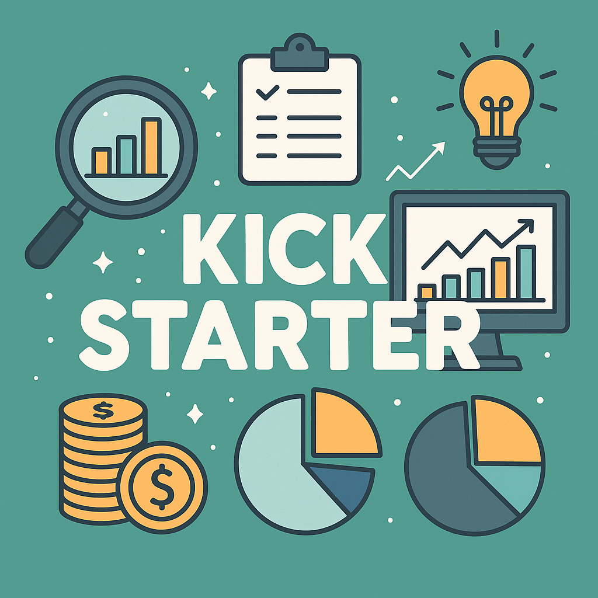

Анализ данных по проектам Kickstarter
1. Обзор проекта

Цель проекта — исследовать факторы, влияющие на успешность проектов, размещённых на платформе Kickstarter. Основное внимание уделяется категориальным переменным, времени запуска и характеристикам названия проекта. Построена модель классификационного дерева решений (decision tree), с помощью функции rpart(), которая предсказывает успех проекта.
2. Предобработка данных
В рамках подготовки данных были реализованы следующие шаги:
- Преобразование строковых переменных в факторы для проведения статистических тестов.
- Преобразование даты запуска (
launched) в формат Date. - Создание новых признаков:
- на основе даты запуска: месяц, день, сезон, день недели, час запуска, часть дня, длительность кампании;
- на основе категорий: комбинированная переменная
gen_category, длины строк, количество слов, первые буквы и совпадения названий; - на основе названия проекта: длина названия, количество слов, наличие КАПСА и специальных символов.
3. Разведочный анализ
3.1 Самые дорогие успешные проекты по категориям
Наибольшая средняя сумма собрана в категориях: - Technology - Design - Food
3.2 Процент успешных проектов по категориям
Самые успешные категории: - Comics - Dance - Theater - Games - Music
Интересно, что самые дорогие категории (например, Technology) показывают самый низкий процент успеха (~25%).
3.3 Подкатегории (gen_category)
Анализ по подкатегориям выявил: - Более высокие суммы сбора в специфичных подкатегориях (например, Movie Theaters, Camera Equipment). - Более точное понимание успешности — например, Video Games понижают средний успех в категории Games, тогда как Tabletop Games — повышают.
3.4 Статистические тесты
Проведён тест независимости между успешностью и: - category - main_category - gen_category
Во всех случаях p-value < 0.05, гипотеза о значимости различий подтверждена.
4. Влияние даты и времени запуска
4.1 Месяц и день
Тесты показывают статистически значимые, но практически незначительные различия.
4.2 Сезон и день недели
- Лёгкий рост успешности осенью.
- Наибольшая успешность у проектов, запущенных вторник–среда.
4.3 Время суток
Проекты, запущенные во второй половине дня (12:00–18:00), демонстрируют лучший результат.
4.4 Длительность кампании
- Проекты с длительностью более 30 дней — менее успешны.
- Успешные проекты в среднем короче, чем неуспешные.
5. Название проекта как источник признаков
Анализ показал, что успешные проекты чаще имеют: - Более длинные названия - Больше слов - КАПС в отдельных словах - Спецсимволы (“:”, “!”, “;”)
Все переменные подтвердили свою значимость статистическими тестами.
6. Построение модели
6.1 Сложная модель (rpart, без отбора признаков)
- Accuracy на тренировочной выборке: 0.70
- Accuracy на тестовой выборке: 0.68
- Применено обрезание дерева по оптимальному
cp— точность практически не изменилась.
Наиболее важные переменные: - category, gen_category, main_category - cat_first_letter, gen_cat_first_letter - usd_goal_real, period_length, name_length - launch_dayPart, currency, country, launch_hour
6.2 Упрощённая модель
Построена модель с меньшим числом признаков на основе важности переменных из модели 1:
- Accuracy на тренировочной выборке: 0.675
- Accuracy на тестовой выборке: 0.669
Снижение точности незначительно, зато модель проще и легче интерпретируема.
6.3 Интерпретация групп
Упрощённая модель выделяет 7 групп проектов с разными вероятностями успеха:
- Неблагоприятные подкатегории → неуспешен
- Благоприятные подкатегории → успешен
- Высокая цель (>31 000 USD) → неуспешен
- Длинная кампания (>56 дней) → неуспешен
- Малая цель (<1418 USD) → успешен
- Запуск вечером/ночью → неуспешен
- Запуск днём + умеренная цель → успешен
7. Проверенные гипотезы
Во всех случаях гипотезы о статистически значимых различиях между успешностью и переменными (категории, даты, названия, длительность и т.д.) подтвердились (p-value < 0.05).
8. Общие выводы
- Категориальные признаки (особенно
gen_category) — мощные предикторы успешности. - Название проекта и особенности запуска (время, длительность) тоже влияют.
- Простая модель может эффективно предсказывать успешность с разумной точностью.
- Разведочный анализ позволил обосновать выбор переменных для модели.
9. Рекомендации
- При запуске проекта стоит учитывать: подкатегорию, время суток, оптимальную длительность кампании.
- Название проекта должно быть информативным, длинным, возможно с выделениями (КАПС, знаки).
- Подбор правильной подкатегории имеет ключевое значение для успеха.